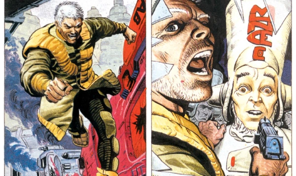

Dredd's first published villain.
Art by Garry Leach
| Story Title | Parts | Pages | w indicates a wraparound coverCovers | Year(s) | Issues | Writer | Artist | Colourist | Letterer |
|---|---|---|---|---|---|---|---|---|---|
From Judge Dredd[Judge Whitey] | 1 | 5 | 0 | 1977 | Reprints: JDA'82 723 (supplement) FCBD7‑QR http://content.2000adonline.com/FCBD2017/JudgeWhitey.pdf2 | Peter Harris | Carlos Ezquerra Mike McMahonvarious | <-- p5, [b&w] | McGowan |
From Judge DreddDevil's Island | 1 | 4 | 0 | 1977 | Reprints: JDA'8431 | Gerry Finley-Day | Ian Gibson | [b&w] | Tony Jacob |
From Judge Dredd[Whitey's Brother] | 1 | 4 | 0 | 1977 | 2KA'78 | Steve Moore | Mike McMahon | [b&w] | unknown |
From Judge Dredd10 Years On | 1 | 6 | 0 | 1987 | Reprints: M233520 | Alan Grant John Wagnervarious | Garry Leach | <-- 2pp, [b&w] | Tom Frame |
From Tales From Mega‑City OneChristmas Comes to Devil's Island | 1 | 10 | 0 | 2021 | 2262 | Karl Stock | James Newell | [greyscale] | Annie Parkhouse |
| year | episodes | pages |
| 1977 | 3 | 13 |
| 1978 | 0 | 0 |
| 1979 | 0 | 0 |
| 1980 | 0 | 0 |
| 1981 | 0 | 0 |
| 1982 | 0 | 0 |
| 1983 | 0 | 0 |
| 1984 | 0 | 0 |
| 1985 | 0 | 0 |
| 1986 | 0 | 0 |
| 1987 | 1 | 6 |
| 1988 | 0 | 0 |
| 1989 | 0 | 0 |
| 1990 | 0 | 0 |
| 1991 | 0 | 0 |
| 1992 | 0 | 0 |
| 1993 | 0 | 0 |
| 1994 | 0 | 0 |
| 1995 | 0 | 0 |
| 1996 | 0 | 0 |
| 1997 | 0 | 0 |
| 1998 | 0 | 0 |
| 1999 | 0 | 0 |
| 2000 | 0 | 0 |
| 2001 | 0 | 0 |
| 2002 | 0 | 0 |
| 2003 | 0 | 0 |
| 2004 | 0 | 0 |
| 2005 | 0 | 0 |
| 2006 | 0 | 0 |
| 2007 | 0 | 0 |
| 2008 | 0 | 0 |
| 2009 | 0 | 0 |
| 2010 | 0 | 0 |
| 2011 | 0 | 0 |
| 2012 | 0 | 0 |
| 2013 | 0 | 0 |
| 2014 | 0 | 0 |
| 2015 | 0 | 0 |
| 2016 | 0 | 0 |
| 2017 | 0 | 0 |
| 2018 | 0 | 0 |
| 2019 | 0 | 0 |
| 2020 | 0 | 0 |
| 2021 | 1 | 10 |
| 2022 | 0 | 0 |
| 2023 | 0 | 0 |